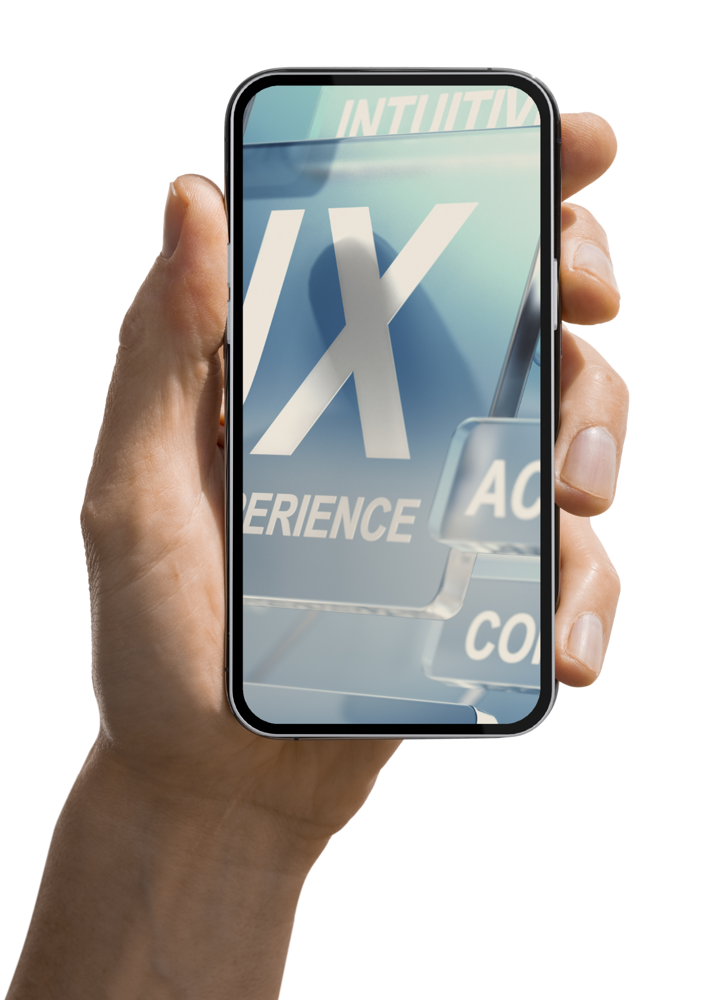

Diseño de Interacción: Mejorando la experiencia del usuario
Cuando hablamos de Diseño de Interacción...
Imagina que visitas un sitio web para comprar un boleto de avión. Aunque ya has hecho este tipo de compras antes, esta vez el proceso es más complicado de lo que esperabas. Al llegar a la página principal, te bombardean con múltiples opciones que no están organizadas claramente. Buscas el vuelo adecuado, pero los menús son confusos y no encuentras fácilmente el botón de compra. La frustración es tanta que decides abandonar el sitio y buscar otra opción. Este tipo de experiencia es común, y es un ejemplo de un mal Diseño de Interacción.
El Diseño de Interacción es más que solo la apariencia de un sitio web; se enfoca en cómo los usuarios interactúan con él. Su objetivo principal es garantizar que la experiencia sea intuitiva y fácil de usar. Un buen diseño de interacción elimina obstáculos para que los usuarios logren sus objetivos de manera eficiente, mientras que uno deficiente genera frustración y abandono del proceso.
El problema en la historia descrita no radica en la falta de información o contenido, sino en un diseño mal planificado que complica la navegación. En lugar de guiar al usuario hacia su objetivo (como comprar un boleto), el sitio lo confunde con opciones innecesarias y desorganizadas. Aquí es donde entra en juego la importancia del Diseño de Interacción. Cuando el sitio web es rediseñado con un enfoque en la interacción, la experiencia cambia radicalmente. Las opciones ahora son claras, los pasos a seguir son simples y la navegación se vuelve mucho más intuitiva. Esto permite que el usuario complete la compra de manera rápida y sin dificultades.
Un buen diseño de interacción tiene como principios fundamentales:
1. Mantenerlo simple: Las tareas y pasos deben ser fáciles de entender y realizar.
2. Ser claros: La información debe estar bien organizada para que el usuario la encuentre rápidamente.
3. Permitir una navegación Intuitiva: El usuario no debe perderse ni sentirse frustrado mientras navega por el sitio.
4. Dar retroalimentación: El sistema debe dar señales claras de que el usuario está en el camino correcto o si ha cometido un error.
El Diseño de Interacción es crucial para mejorar la experiencia del usuario. Un sitio web bien diseñado, centrado en las necesidades del usuario, no solo facilita la navegación, sino que también genera satisfacción y mejores resultados comerciales. Para estudiantes y profesionales del diseño, entender y aplicar estos principios es esencial para crear productos digitales exitosos. Esta página proporciona una visión general del tema, pero se recomienda profundizar más a través de estudios de caso, libros especializados y artículos académicos sobre Diseño de Interacción y Experiencia de Usuario (UX).
Diseño de Interacción y su uso

Los pasos escenciales para el Diseño de Interacción

Para un buen Diseño de Interacción puedes aplicar los siguientes pasos:
1. Simplicidad: Mantener las interfaces y los procesos lo más simples posible. Cada paso o elemento debe ser fácil de entender, evitando la sobrecarga de información.
2. Claridad: La información y las opciones deben estar claramente presentadas para que el usuario sepa qué hacer en todo momento. Los elementos visuales y textuales deben ser comprensibles sin ambigüedades.
3. Consistencia: Utilizar patrones y comportamientos coherentes a lo largo de la experiencia. Esto ayuda a los usuarios a predecir cómo funcionará cada parte del sistema.
4. Retroalimentación: El sistema debe proporcionar respuestas claras sobre las acciones del usuario. Esto incluye confirmaciones, alertas o señales visuales que indiquen si una acción se realizó correctamente o si hubo un error.
5. Minimización de la carga cognitiva: Evitar que los usuarios tengan que recordar demasiada información o realizar tareas innecesarias. El diseño debe guiar al usuario de manera fluida, con pocos pasos y sin distracciones.
6. Control del usuario: Dar al usuario la sensación de control sobre sus acciones y ofrecer opciones de corrección o deshacer cuando sea necesario.
7. Accesibilidad: Asegurarse de que el diseño sea inclusivo y utilizable por personas con diferentes habilidades, dispositivos y contextos.
8. Objetivos centrados en el usuario: El diseño debe enfocarse en facilitar que los usuarios logren sus objetivos de la manera más eficiente posible, eliminando barreras o fricciones.
Estos principios ayudan a crear una experiencia de usuario fluida, intuitiva y agradable.
Aprende más del tema:
Experiencia de Usuario
Diseño Web

Prototipos